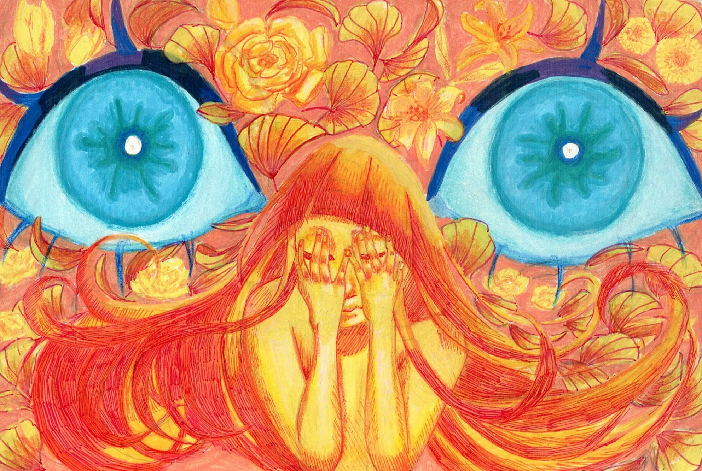

Bluebloods
An upcoming webseries by Tony Espiritu and Jacob Corpus
Artemis Sallow is an investigator for PATRON, an agency who acts as the world government after "Old Earth's" fall to a magical virus that now has the capability to give magic to those who can survive it.
However, her faith in the agency and those in control begins to waver as she discovers a conspiracy that threatens the lives of those she had sworn to protect.


"Love is the most twisted curse of them all"